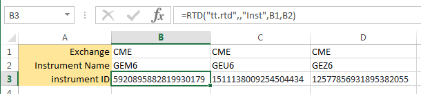

Before you can access information about an instrument, you must first extract its ID. You can use the following formula to retrieve the ID for an instrument:
=RTD("tt.rtd",,"Inst","exchangeName","instrName")
Note: The second parameter is the name of the external server running the RTD Server. As the TT RTD Server always runs locally, you must omit a value for the second parameter or supply an empty string (“”). However, you must account for the parameter in the formula.
The instrName argument corresponds to what is commonly called the short name for the instrument.
For example, if you want to retrieve the ID for the Jun16 GE futures contract from the CME exchange, you need only enter the following formula in a cell.
=RTD("tt.rtd",,"Inst","CME","GEM6")
After processing the formula, Excel displays the result in the cell, similar to the following:

You can now use the result shown in the cell to identify the instrument in other formulas in the spreadsheet. Typically, you would reference the cell (B3, in this case) to identify the instrument in other formulas.